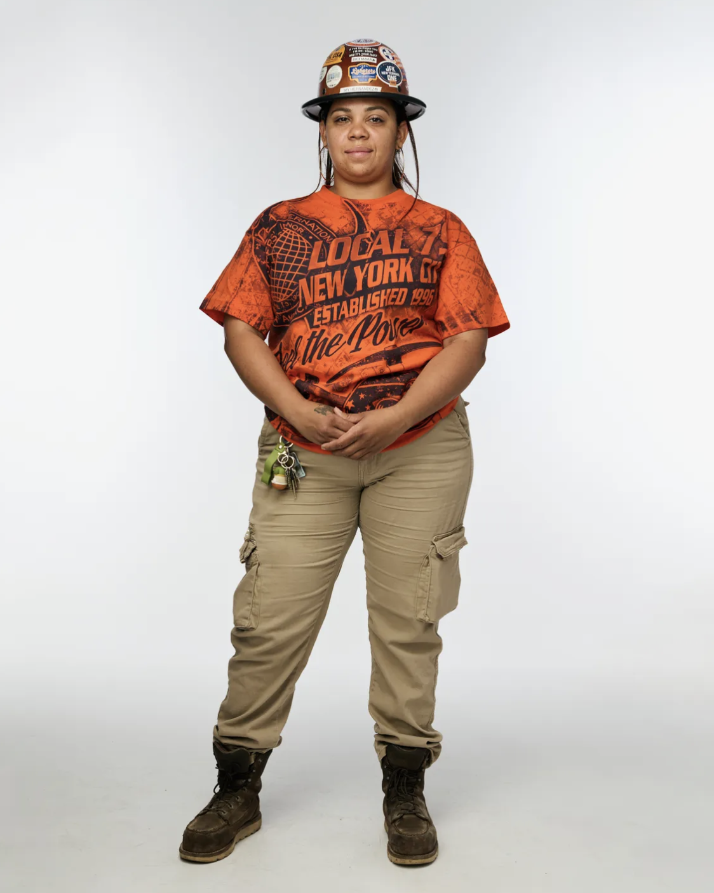

Construction’s labor marketplace.
The largest network of vetted construction workers in America. Built for humans, augmented by AI.
Sign upWe’re on a mission to fix the skilled labor shortage, starting with access.
Only 1 in 20 skilled workers are missing from the labor pool. The other 19 are already out there, building America every day. The challenge isn’t creating more craft workers overnight. It’s helping the ones who already exist access better opportunities.
That’s why we built Skillit. Our plan is simple: unlock access to the craft workforce that already exists, then use our demand data and AI to help millions more people enter the trades, build meaningful careers, and become fully productive craft workers.

Scale with AI hiring infrastructure built for construction.
America’s largest database
Access a rapidly-growing database of the nation’s best craft workers. Standardized, verified, and ready to be routed to your exact project phases.
Prompt to search
Natural language search for any craft role. No more digging through unformatted PDFs. Tell the system what you need, and see vetted worker profiles in seconds.
Connect instantly
Use Sam, our AI scheduling assistant, to connect instantly with workers. Sam handles outreach and scheduling so you never have to worry about weekend responses.